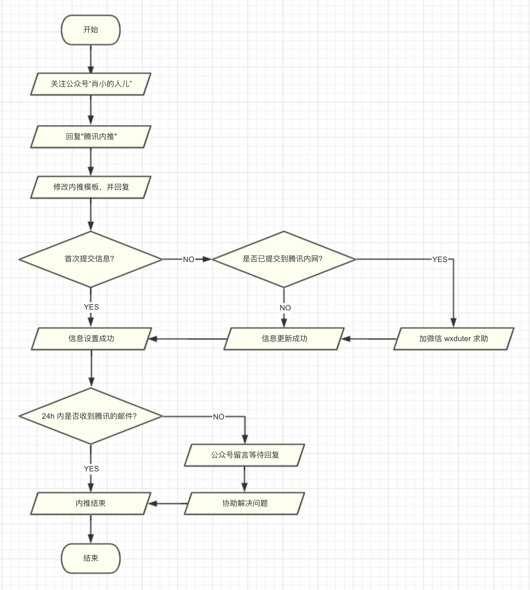
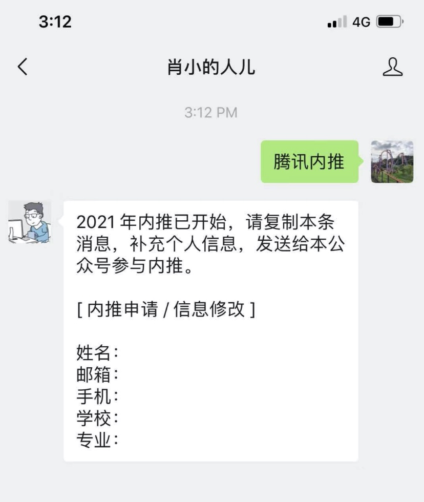
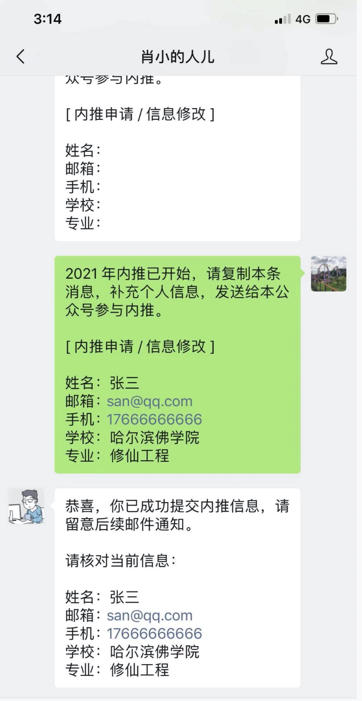

我目前在腾讯 WXG 负责客户端开发，尽己所能，帮助各位找到心仪的工作。
可以内推腾讯公司的所有事业群、所有分公司、所有部门、所有岗位。
内推流程图

内推具体步骤说明
上面的流程图已经很清晰了，这里再细说一下主要步骤，方便理解。
1. 关注公众号
2. 回复“腾讯内推”

3. 提交信息
回复“腾讯内推”之后，你会收到一个内推申请模板，直接把对应的信息改成自己的即可。

4. 更新信息
如果提交的信息有误，想修改，那就重新提交一次就好。新的提交会覆盖上一次提交。
但是如果我这边已经帮你提交到公司内网了，修改起来就很麻烦，尽量避免，如果真遇到这种情况，加我微信吧 wxduter 说明情况吧。
FAQ
有问题请先自己尝试解决，如果实在搞不定，就加微信 wxduter 吧。
参考资料
注意事项
- 提交信息前请确认信息正确，由于信息不正确导致内推出现问题自负。
- 本内推服务完全免费，请不要相信其他付费链接。
- 如对此内推服务时有疑问，请公众号留言，我有空时会依次处理。